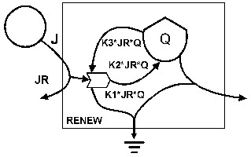
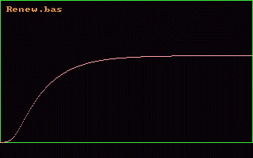

Minimodelos para simular o comportamento de ecossistemas (naturais e antrópicos) em computador.
H.T. Odum e E. Odum,
University of Florida & Santa Fe Community College,
Gainesville, Flórida, USA, 1994.
Crescimento baseado em recursos renováveis
|

|

|
| Download de programa em Basic
renew.bas
|
Executável (IBM PC/DOS)
renew.exe
|
|
Exemplo:
Acúmulo de energia em uma floresta na forma de biomassa utilizando o
sol como fonte renovável. A floresta cresce até utilizar quase toda a
energia disponível e parte então para um estado estacionário.
T = Tempo (dias).
J = Fluxo de entrada constante de energia.
Q = depósito de biomassa. O crescimento de Q é proporcional à energia solar aproveitável (JR).
K = Coeficiente do aproveitamento do fluxo total J de energia.
K1 = Coeficiente de crescimento de biomassa.
K2 = Coeficiente de retro-alimentação (reciclagem).
K3 = K1 - K2.
K4 = Coeficiente de morte e decomposição.
JR = J/(1+K*Q) fração de J que pode ser efetivamente acumulada.
K*JR*Q = Fração do fluxo de energia que entra no sistema.
K1*JR*Q = quantidade de biomassa crescendo na floresta.
K4*Q = redução de biomassa devido a morte e decomposição.
DQ = K3*JR*Q - K4*Q: Equação para taxa de varição na quantidade de biomassa (Q) da floresta.
T = T + 1: equação de acréscimo de tempo.
Q = Q + DQ: mudança de Q ao final de cada dia.
|
Trabalho de adaptação para Internet (com autorização dos autores)
para uso didático nos países de lingua portuguesa:
Aluno: Marcio de Carli decarli@fea.unicamp.br
Orientador: Enrique Ortega decarli@fea.unicamp.br
Laboratório de Engenharia Ecológica e Informática Aplicada
http://www.unicamp.br/fea/ortega/homepage.htm
FEA-Unicamp. Campinas, SP, Brasil. Outubro de 1999.
{kind=link}